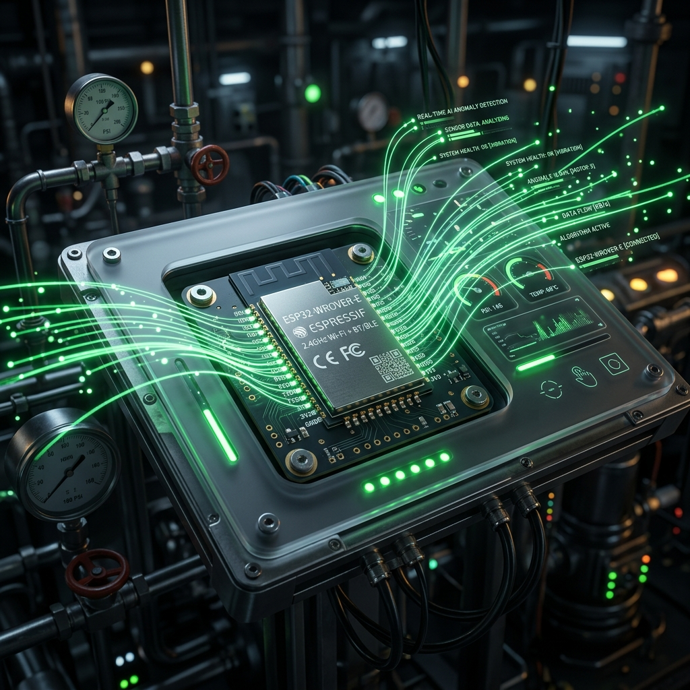

Project Overview
The Industrial Edge AI Gateway is a high-performance cyber-physical system designed to bring predictive maintenance and safety diagnostics to the extreme edge. By integrating Gated Recurrent Unit (GRU) models directly onto the ESP32-WROVER-E microcontroller, the system can detect anomalies in industrial sensors (smoke, CO, temperature, voltage) with sub-100ms latency, independent of cloud connectivity.

Key Challenges & Solutions
1. Real-time Constraint Isolation
In industrial safety, missing a protocol poll (Modbus/BACnet) is not an option. I architected a dual-core task isolation strategy using FreeRTOS:
- Core 0 (Priority 24): Dedicated to high-speed protocol polling and industrial-grade telemetry reporting and control.
- Core 1 (Priority 5): Isolated for TFLite Micro inference, ensuring that heavy computation never starves critical communication tasks.
2. Memory Optimization in PSRAM
Running deep learning models on a 4MB PSRAM module requires surgical memory management. I implemented a custom allocation strategy for the TFLite Tensor Arena and model weights, utilizing MALLOC_CAP_SPIRAM to keep the internal SRAM free for fast stack operations.
3. The EHIF (Extensible Hardware Interface) Protocol
To enable seamless OTA model updates and telemetry reporting, I extended the EHIF protocol with a new command set (0x50-0x5F). This allows the gateway to receive quantized model chunks and reload the inference engine without a full system reboot.
Technical Specifications
| Component | Specification |
|---|---|
| Microcontroller | ESP32-WROVER-E (Dual-core, 240MHz) |
| AI Framework | TensorFlow Lite Micro (TFLM) |
| Model Architecture | GRU (Gated Recurrent Unit) for Time-series Anomaly Detection |
| Inference Latency | ~85ms per window (10 steps) |
| Memory Footprint | 256KB Arena in PSRAM / 1.2MB Model in Flash |
| Protocols | Modbus RTU/TCP, BACnet/IP, CIP, and Industrial IoT protocols |
The AI Feature Vector
The system monitors 6 core features at 1Hz to build a stateful representation of the industrial environment:
- Battery Voltage: Monitoring supply health.
- Loop Current: Detecting sensor wiring faults.
- Temperature: Thermal stress analysis.
- Smoke Obscuration: Fire signature detection.
- CO Concentration: Toxicity monitoring.
- System Status: Bitmask of hardware flags.
Future Work: LLM Integration
The next phase of this project involves using the Edge AI anomalies as Cognitive Triggers for a cloud-resident Digital Twin agent. When the ESP32 detects an anomaly, it will trigger a LangGraph-based RAG workflow to provide the human operator with grounded diagnostic recommendations based on the equipment's technical manuals.